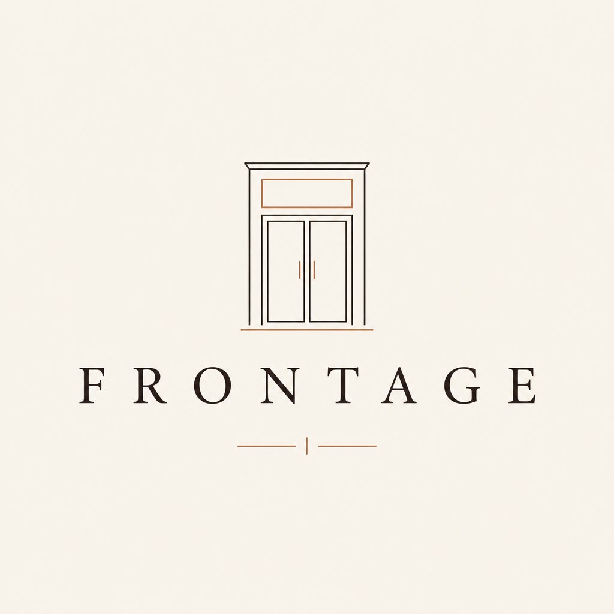
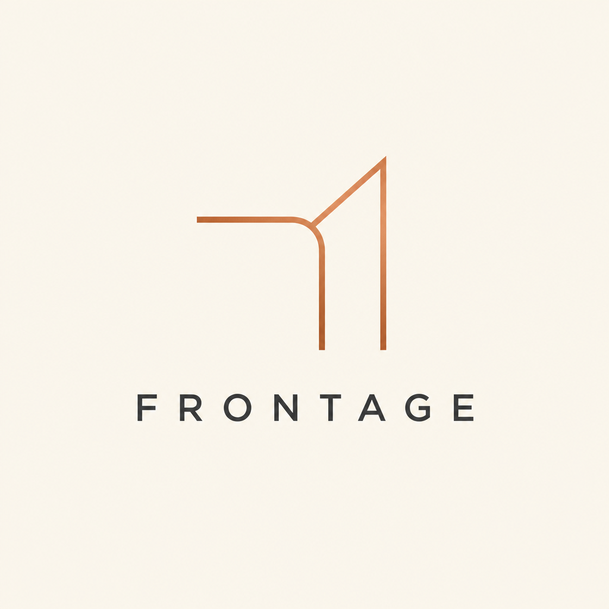
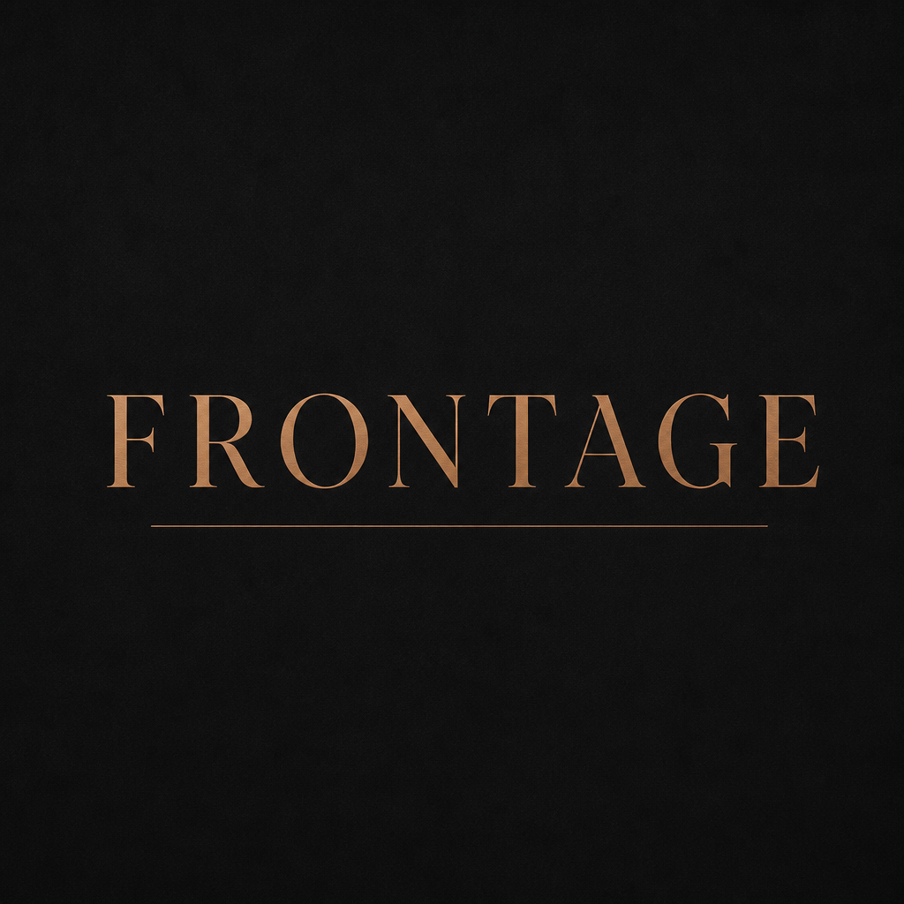
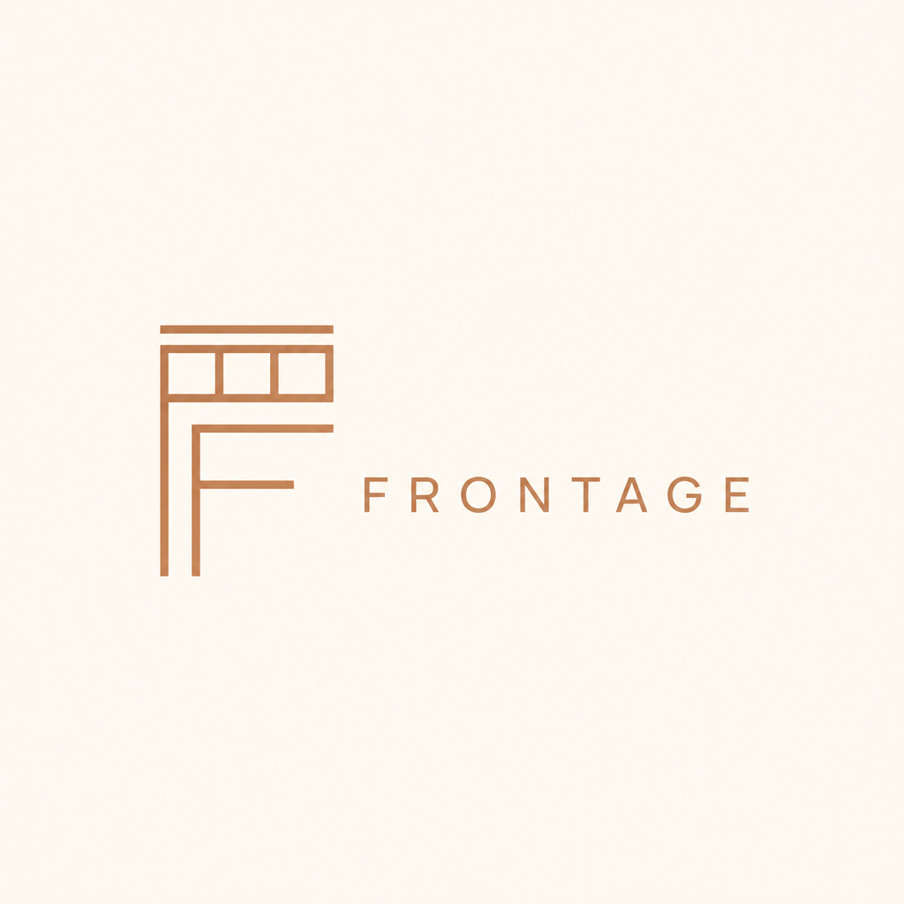
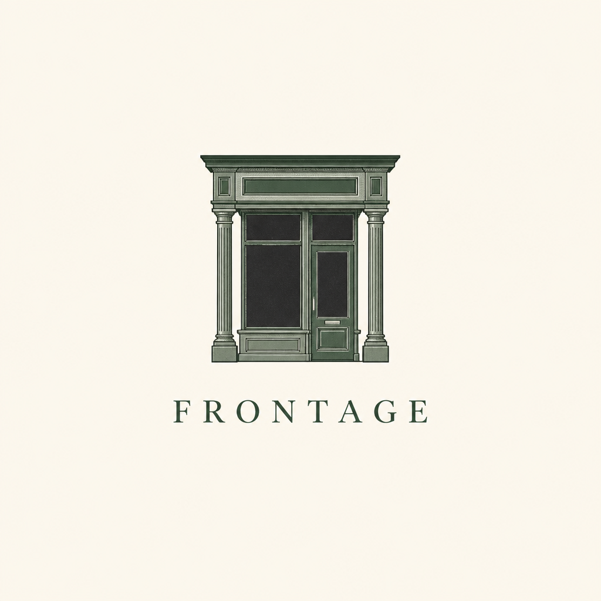
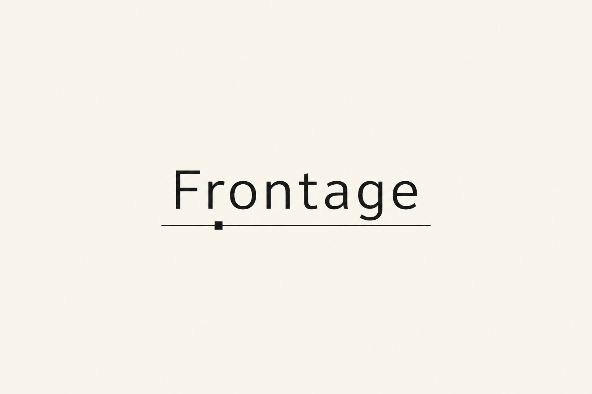
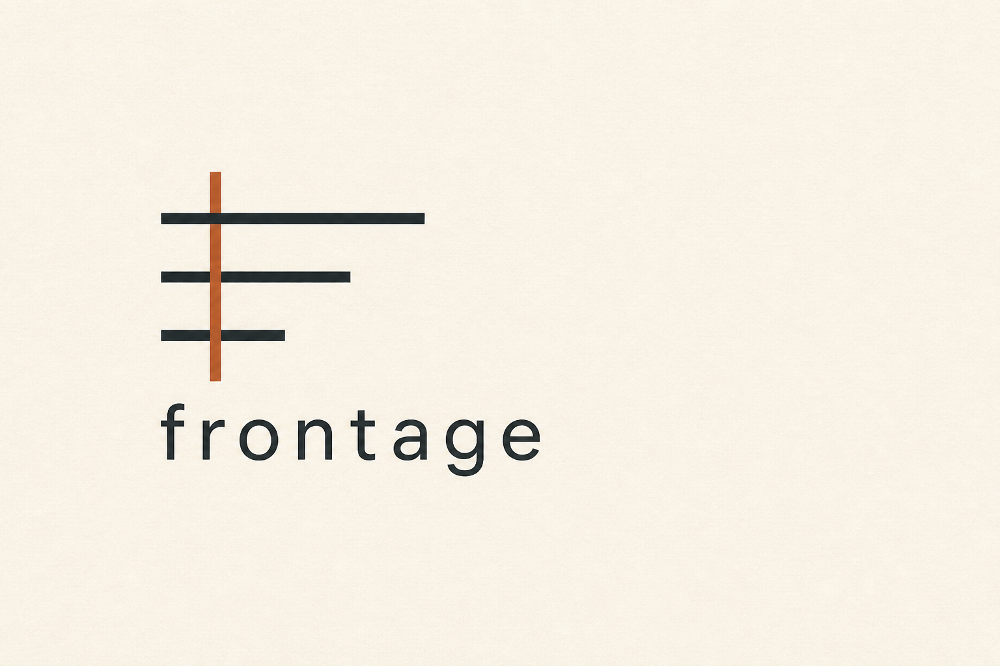
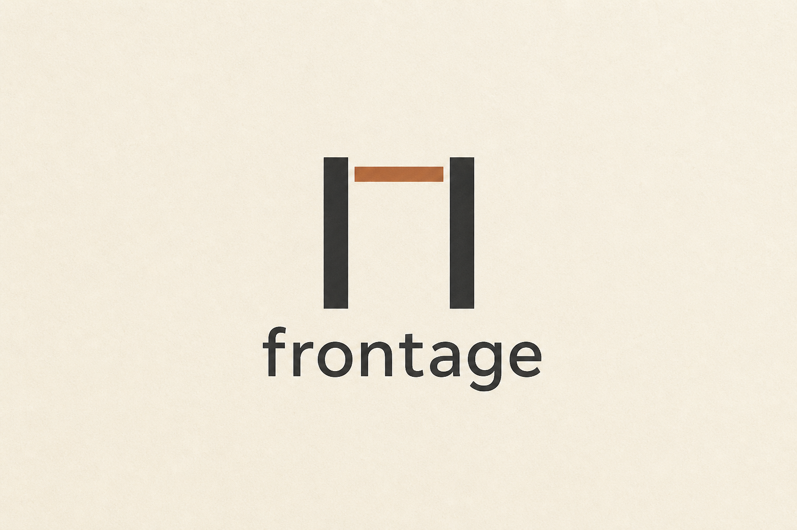
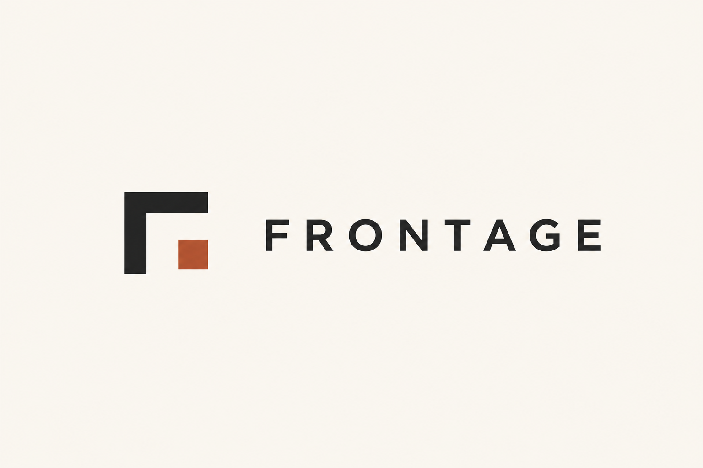
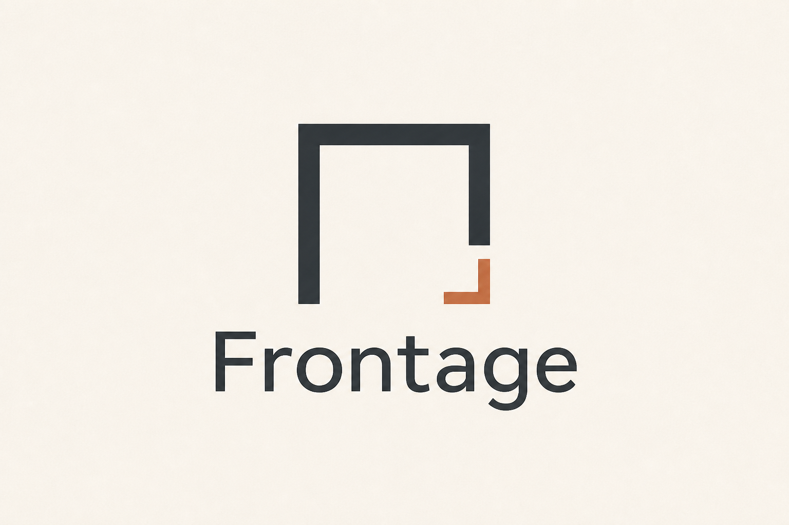

Cursor · A1
Storefront
Door + transom. Closest to the name. Quiet trade office.
Ten pictures · you pick · no winner named
Five Cursor sketches. Five advisor marks drawn from their independent directions. Equal weight. Concepts, not final print files. A pick is not a website, a van wrap, or a trademark filing.










Paper stage. $0 spent. A pick does not start the website.